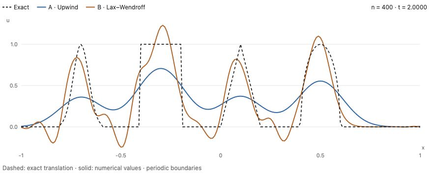
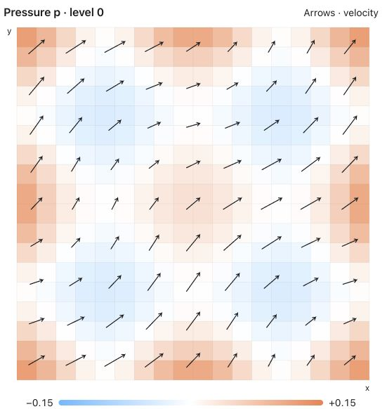
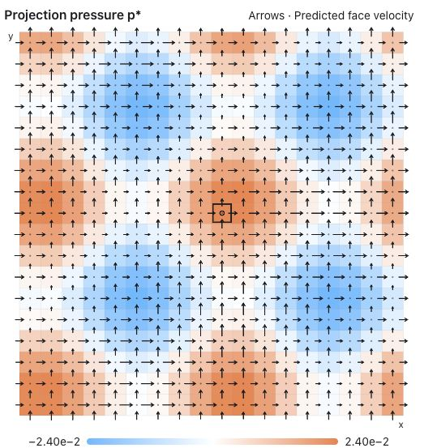
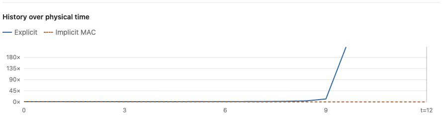
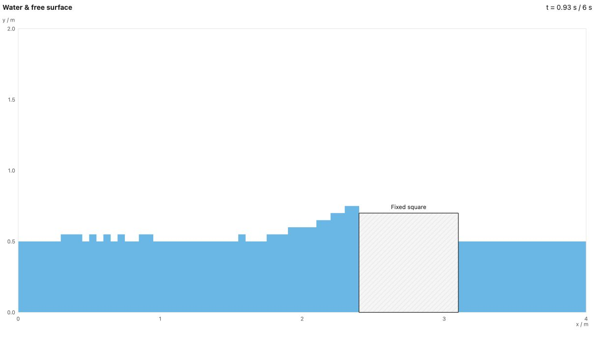

Navier–Stokes Flow Lab
3D Navier–Stokes equations
Incompressible flow · constant density and viscosity · zero body force
u, v, w are the velocity components, p is pressure, ρ is density, and ν is kinematic viscosity.
Explore the experimentsInside a time step
Follow the flow. Understand the method.
A place to experiment

01 · Start with transport
One equation. Ten ways to solve it.
Draw your own initial curve. Compare difference schemes against exact advection, and save your curve for another experiment.
1D advection
02 · See every step
Watch a solution come together.
Follow the pressure solve and velocity update. Connect the animation to the equations and the calculation flow.
Explicit time stepping
03 · Explore projection
Make room for pressure.
Explore prediction, pressure projection and correction on a staggered MAC grid.
Implicit MAC
04 · Question stability
Same flow. Different outcomes.
Run explicit and implicit methods together. See what changes as the time step grows.
Side-by-side comparison
05 · Change the geometry
Meet the wave.
Place an obstacle in the flow. Change its shape, size and position, then explore the response.
Wave impactLearn by changing things
A small change.
A new understanding.
Start simple, make a prediction, and let the calculation show you what happens.
- 01
Choose a starting point
Pick a preset flow, or draw and import your own 1D initial condition.
- 02
Change one variable
Adjust a time step, a grid, or a difference scheme. Step through the calculation at your own pace.
- 03
Look beyond the picture
Use equations, residuals and comparison plots to explain the behavior you see.
Open to exploration
Keep asking. Keep experimenting.
The code is open source. Take it apart, build on it, and make the lab your own.
Explore on GitHub